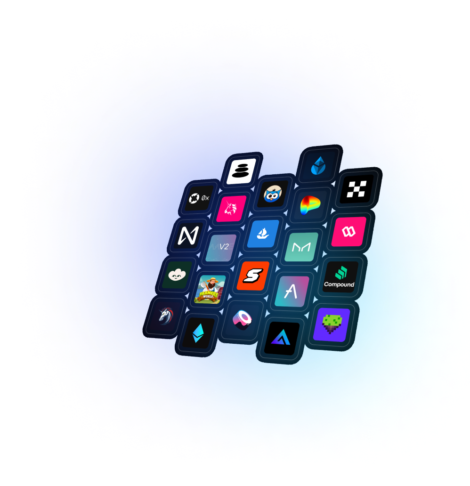

Jutsu.AI
Summary
Jutsu is an innovative Integrated Development Environment (IDE) designed specifically for developers in the web3 space. It streamlines the process of creating, deploying, and managing on-chain components.
Approach
The design of Jutsu effectively captures the essence of a modern Web3 development environment. The use of dark blues and glassmorphism design elements creates a visually appealing and future feeling interface. The focus was on usability,
